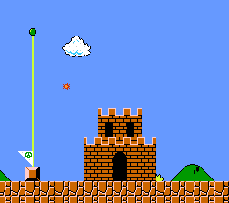

2017 aasta kokkuvõte
2017. mänguaasta niheleb juba esikus rahutult minema ja tema asendaja, nimega 2018, prõmmib kärsitult uksele. Lehvitame seega lahkuvale külalisele head teed ja võtame hetke, et meenutada kõiki neid päästetud printsesse, sõelapõhjaks kõmmutatud terroriste, eepilisi lahinguid, vaikseid tundlikke momente, kibekiireid ringiaegu ja viimase hetke väravaid, mis teda meenutama jäävad.
Telli meie uudiskiri ning toimetame olulisimad uudised, parimad artiklid, kuumimad videod ning sisutihedaimad podcastid otse Sinu elektroonilisse postkasti.
Jaanuar
Kodumaistele mängusõpradele algab aasta rõõmsal noodil - saame teada, et Eesti arendajate ZA/UM Studios poolt loodav teos No Truce With the Furies nomineeriti mainekal SXSW festivalil auhinnale. Teisel pool maakera ületab uudisekünnise Nintendo otsusega Wii U tootmine lõpetada. Jaanuari külmad talveilmad aitavad mööda saata Resident Evil 7: Biohazard , Gravity Rush 2 ja Yakuza 0 .
Veebruar
Veebruaris naelutavad meid ekraani ette Horizon Zero Dawn , For Honor , Sniper Elite 4 , Night in the Woods ja Nioh . Oculus VR-i ja ZeniMax Media vaheline kohtuvaidlus päädib otsusega , et Oculus Rifti tehnoloogia on varastatud ja XeniMaxi kasuks määratakse 500 miljoni dollari suurune trahv . Maarjamaa mängufännidele jääb aga veebruari meenutama teadaanne, et No Truce With the Furies levitajaks saab Humble Bundle .
Märts
Märts osutub ülejäänud aasta jaoks mitmel moel defineerivaks - müügile jõuab röögatult populaarseks osutuv Nintendo Switch ning early accessi jõuab miski nimega PlayerUnknown’s Battlegrounds , mis peagi mängijarekordeid purustama hakkab. Koos Switchiga jõuab kohale kauaoodatud The Legend of Zelda: Breath of the Wild , kuid mängurõõmu pakuvad ka Nier: Automata , Thimbleweed Park ja Mass Effect Andromeda . Kodumaal toimub esmakordselt sotsiaalmeedia auhinnagala PLAYNUPP, mille raames näitab Martin, et oskab graatsiliselt kaotada .
Aprill
Aprillis jätavad mängumaastikule oma märgi Persona 5 , What Remains of Edith Finch , Little Nightmares , Yooka-Laylee ja Telltale’i Guardians of the Galaxy avaepisood . Palju toimub ka kodus - kinos Kosmos toimuma pidanud Outlast 2 demoüritus algatab kodumaises mängijaskonnas elava arutelu vanusepiirangute teemal ning Tartus avab uksed virtuaalreaalsuse elamuskeskus Futuruum . Mõistagi jäävad aprilli kõige enam meenutama Level1-le vabariigi presidendi poolt antud täiesti reaalne ja kindlasti eksisteeriv kultuuripreemia ning kevadine MängudeÖÖ , mida väisavad mängude The Witcher ja Quantum Break arendajad.
Mai
Kevade lõpus saame teada, et Battlefield 1 toob lahingud peagi Eesti saartele, Netflix toob Nõiduri teleekraanile ning Sqare Enix otsib Hitmani kodustuudiole IO Interactive’ile ostjat , jättes kiilaspäise mõrvari tuleviku lahtiseks. Seevastu vanal heal Maarjamaal ristab Sten sarvi maksupoliitika ja iganenud maailmavaadetega . Mängukevade otsad tõmbavad kokku Prey , Injustice 2 , Friday The 13th: The Game ja Star Trek: Bridge Crew .
Juuni
Nagu ikka, eelneb suvisele mängupõuale üks raju orkaan. Selgi aastal on E3 end treileritest, teadaannetest, kuulutustest ja esmaesitlustest kurguni täis söönud . Koos agent 47-ga ohkavad kergendatult ka mängusõbrad, sest IO Interactive ostab end Square Enixi alt iseseisvaks ning säilitab Hitmani õigused . Kodule lähemal aitavad Sten ja Martin Mihkel Raual saada moodsaks vanainimeseks . Suve alguse teevad mänguliseks Tekken 7 , Arms , Crash Bandicoot N. Sane Trilogy ja Dirt 4 .
Juuli
Kesksuvine kuumus toob kaasa tühimiku mängumaastikul, mida Martin ja Sten täidavad Robloxi seltsis . Saame teada, et Assassin’s Creedi ainetel luuakse animasari ja miskipärast küündib üle uudisekünnise lugu mehest, kes kaotas oma rekordilise Xbox’i gamerscore’i seksi tõttu . Omajagu kõneainet pakub pehmelt öeldes luhta läinud Pokemon GO esimene festival . Mängupõuale pakuvad mõnetist leevendust Splatoon 2 ja That’s You! .
August
Suve lõpp viib endaga ka mängupõua - kohale jõuavad Hellblade: Senua’s Sacrifice , Mario + Rabbids: Kingdom Battle , Tacoma , Uncharted: The Lost Legacy , Yakuza Kiwami , Life is Strange: Before the Stormi avaosa ja oma konarlikku teekonda alustab ka LawBreakers . Kümneid tuhandeid mängusõpru toovad ühe katuse alla nii Kölnis aset leidev gamescom kui ka Seattle’is toimuv The International . Oma viimase higetõmbe järel suleb uksed legendaarne Mass Effect Andromeda üllitanud stuudio BioWare Montreal , mis liidetakse pärast teose kesist müügiedu EA Motive’iga.
September
Kargete sügistuulte saabudes teeb ajalugu PlayerUnknown’s Battlegrounds , tuues samaaegselt kokku rekordilise 1,3 miljonit mängijat ja tõugates troonilt varasema tšempioni Dota 2 . Level1 seevastu väisab Leedus Baltikumi suurimat videomänguüritust GameOni ja korraldab järjekordse meeldejääva MängudeÖÖ , kus CS:GO-s võisteldakse 1000 euro suuruse auhinnafondi nimel . Mängusõpradele pakuvad ajaviidet Destiny 2 , Cuphead , Divinity: Original Sin 2 , Dishonored: Death of the Outsider , Project Cars 2 ja Metroid: Samus Returns .
Oktoober
Naughty Dog ületab uudisekünnise oktoobris, kui stuudios lahvatab seksuaalse ahistamise skandaal . Vastuolulised on ka EA otsus sulgeda Star Warsi mängu kallal töötanud Visceral Studios ning IGN-i otsus ära osta Humble Bundle . PlayerUnknown’s Battleground ületab oma eelmisel kuul püstitatud rekordi, tuues korraga mängima 2 miljonit inimest . Eestis aga pakub Sotsiaalministeerium välja, et videomänge ja mänguüritusi puudutavaid vanusepiiranguid võiks tulevikus hakata haldama mugandatud PEGI süsteem . Mängumaailmas hakkavad tähelepanu eest maid jagama raskekaallased - samal päeval ilmuvad Assassin’s Creed Origins , Wolfenstein II: The New Colossus ja Super Mario Odyssey , kuid oktoobrisse mahuvad ka auhinnakastidega pahuksisse sattunud Middle-Earth: Shadow of War , Forza Motorsport 7 , The Evil Within 2 , South Park: The Fractured But Whole ja Gran Turismo Sport .
November
Novembris prantsatab lõpuks poelettidele Xbox One X, kuid olulisi mängualaseid juhtumisi toimub ka kodukamaral. Creative Mobile annab teada, et töötab “ X-Filesil” põhineva teose kallal, bänd Go Away Bird avaldab loo „Gamer Girl“ ning mis kõige tähtsam - hiinlased häkivad sisse Steni Xboxi kontosse , et hulgi Maddeni kraami osta. EA lööb jätkuvalt laineid, omastades Titanfalli kodustuudio Respawn Entertainmenti . Juba varem alguse saanud mikromakseskandaal kulmineerub Belgia sooviga Euroopas mängusisesed auhinnakastid keelustada . Mängusõpru hoiavad enda küüsis Call of Duty: WWII , Need For Speed Payback , Sonic Forces ja eelkõige auhinnakastisaagaga silma paistnud Star Wars Battlefront II
Detsember
Aasta lõpus saame teada, et kauaoodatud Bayonetta 3 saab olema Nintendo Switchi eksklusiivmäng ning Team Secret teeb Eesti e-spordi fännidele varajase jõulukingi, võites Shanghai Majori . Toimub iga-aastane mängumaailma auhinnasadu The Game Awards , mis on täis veidralt krüptilisi treilereid ja veel veidramat sõimu Oscarite suunas . Eesistuja Ajit Pai juhtimisel hääletab USA Federal Communications Commission (FCC) Ühendriikides netineutraalsuse kaotamise poolt, saates küsimuse arutamiseks Kongressi. Level1 aga ei lase sellel oma pühademeeleolu rikkuda - vaadatakse tagasi aasta parimatele (ja halvimatele) , ragistatakse ajusid ning otsitakse parimaid viise jõulude üle elamiseks . Ning viimaks, veel aasta lõpus ilmuvate Hello Neighbor ja Okami HD seltsis, suunatakse pilk tulevikku, et võtta vastu järgmine, 2018. mänguaasta.
Selline oli 2017. aasta videomängudes. Mainimata on veel vaid viimase 365 päeva kõige tähtsam osa, mis sobiks sobiks ideaalselt igasse kuusse - Sina. Sina, kes sa loed meie artikleid, kuulad meie podcaste, vaatad meie videoid ja elad kaasa meie tegemistele. Sina innustad meid saama mitmekülgsemaks ja kvaliteetsemaks ning püüdlema uute eesmärkide poole. Ilma Sinuta meid ei oleks.
Seega ära lase ennast häirida kärmelt talviselt pärastlõunasesse hämarusse kaduvast 2017. aastast. Tõmba parem tool, kraba pult ja võta istet! Mängime midagi head ja vaatame, milliseid uusi unustamatuid emotsioone juba esikus saapaid jalast rebiv 2018 meile pakub. Ma arvan, et meil saab ka tulevikus koos lõbus olema, sest Sinuga juba igav ei hakka!
Level1 kollektiiv soovib Sulle parimat vana aasta lõppu ja võrratut uue algust!
